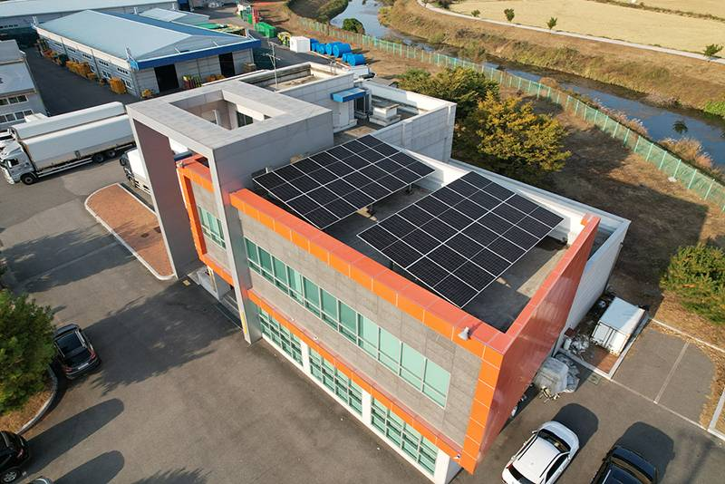

대구시, 7개 구·군 531곳에 태양광·지열 1,850㎾…총사업비 약 34억 원

2027년 재생에너지 융복합지원사업 선정, 국비 8억3,000만 원 / 9개 구·군 가운데 남구·달성군은 이번 컨소시엄에 없어
대구시가 2027년 시내 주택과 산업체 등 531곳에 태양광·지열 설비 모두 1,850㎾를 보급한다. 시는 11월 17일 기후에너지환경부의 「2027년 재생에너지 보급 융·복합지원사업」 대상으로 뽑혀 국비 8억3,000만 원을 받게 됐다고 밝혔다.
사업비는 국비에 지방비와 민간 부담금을 더해 약 34억 원이다. 시는 중구·동구·서구·북구·수성구·달서구·군위군 등 7개 구·군과 컨소시엄을 꾸렸고, 한국에너지공단 재생에너지센터의 공개 평가와 심층 평가를 거쳐 뽑혔다.
이 사업은 집과 공공시설, 공장 건물이 한데 모인 지역을 골라 태양광과 지열 등 두 종류 이상의 재생에너지 설비를 한꺼번에 설치하도록 나라가 돕는 제도다. 대구의 9개 구·군 가운데 남구와 달성군은 이번 컨소시엄 명단에 들어 있지 않다.
시민에너지 관점
설비 1,850㎾를 531곳에 나누면 한 곳에 평균 3.5㎾ 남짓으로, 대부분 지붕 하나 크기의 설비다. 본지가 11월 18일 보도한 인천 영종구도 같은 공모로 227곳에 설비를 놓는데, 두 곳 모두 집과 건물마다 따로 설비를 다는 방식이다. 각 가구의 전기·냉난방 비용은 줄지만, 이웃이 함께 출자해 발전소를 세우고 수익을 나누는 구조는 이 사업에 들어 있지 않다. 국비와 지방비가 들어가는 만큼 대구시는 개별 보급과 함께 공공건물 지붕을 주민 출자 발전소에 여는 계획도 세워야 한다.
출처: 대구광역시 2026-11-17 시정소식 「대구시, ‘재생e 융복합지원사업’ 선정… 국비 8억 3천만 원 확보」(물에너지산업과) 원문 보기
출처: 대구광역시 열람 2026-11-18 대구광역시 누리집 구·군 바로가기(9개 구·군) 원문 보기